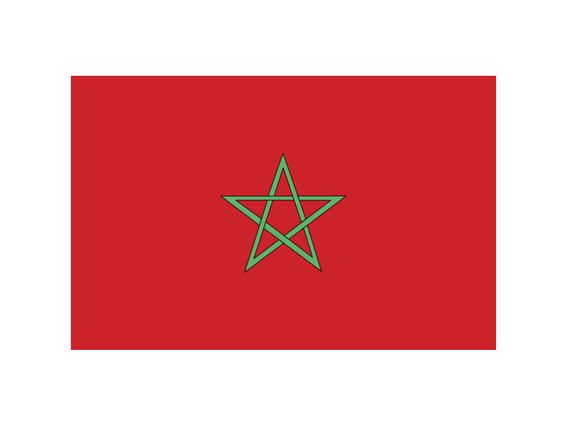

TOURISME
LA CULTURE DE L’OLIVIER AU MAROC
Importance et aire de culture de l’olivier au Maroc:
Principale espèce fruitière cultivée au Maroc, L’Olivier occupe une surface de 560.000 ha dont 220.000 ha en zone irriguée (Haouz, Tadla, Souss-Massa, Moulouya, Nador, Boulemane, Oujda, El Kelaâ, Marrakech, Chichaoua, Bénimellal Ouarzazate, Tafilalet. Figuig, Essaouira), 200.000 ha en zone de montagne (Chefchaouen, Taounate, Taza, Tanger, Tétouan, Azilal, Khénifra, Al Hoceima), 100.000 ha en zone bour favorable (Sefrou, El Hajeb, Fès, Meknès, Sidi Kacem, Gharb, Loukkos, Benslimane) et 40.000 ha dispersés entre Safi, Settat, Khémisset et Khouribga. L’Olivier contribue à l’emploi en milieu rural avec 11 millions de journées de travail annuellement. La production d’olive se situe autour de 560.000 T et permet de générer 50.000 T d’huiles d’olives et 90.000 T d’olives de table industrielles.
Les températures, la pluviométrie, le vent et la lumière:
L’olivier résiste jusqu’à -8 à -10’C en repos végétatif hivernal Mais à 0 à -1°C, les dégâts peuvent être très importants sur la floraison. A 35- 38°C, la croissance végétative s’arrête et à 4O°C et plus, des brûlures endommagent l’appareil foliacé et peuvent faire chuter les fruits, surtout si l’irrigation est insuffisante. Avec 600 mm de pluie bien répartie, l’olivier végète et produit normalement. Entre 450 et 600 mm, la production est possible à condition que les capacités de rétention en eau du sol soient suffisantes (sol profond argilo-limoneux). Avec une pluviométrie inférieure à 200 mm, l’oléiculture est économiquement non rentable. Les vents chauds au cours de la floraison, les brouillards et les fortes hygrométries, la grêle et les gelées printanières sont autant de facteurs défavorables à la floraison et à la fructification. L’olivier étant exigeant en lumière, l’insolation est à considérer dans le choix de l’orientation des arbres, la densité de plantation et les tailles d’éclaircie.
Les variétés:
L’Oléiculture marocaine est constituée à 96% de la variété population « Picholine marocaine », variété à double fin, huile et conserve, d’une richesse normale en huile, mais sensible à la maladie de l’Œil de paon. Le reste du patrimoine est constitué de Meslala, olive de conserve, de Picholine du Languedoc, Dehbia, concentrées essentiellement en irrigué (Haouz, Tadla, El Kelaâ), Ascolana dura, Manzanille, Frantoïo, Picual Gordale Sévillane etc … Deux clones de Picholine marocaine sont en cours de diffusion.
Cycle végétatif et productif de l’olivier:
Au cours de son cycle annuel de développement, l’olivier passe par les phases suivantes: (1) Janvier, février: induction, initiation et différenciation florale; (2) courant mars: croissance et développement des inflorescences à raisselle des feuilles que portent les rameaux de rannée précédente; (3) Avril: pleine floraison; (4) Fin Avril-début mai: fécondation et nouaison des fruits; (5) Juin: début de développement et grossissement des fruits; (6) Septembre: véraison; (7) Octobre: maturation du fruit et son enrichissement en huile et (8) Mi-Novembre en janvier: récolte des fruits. La période la plus intense du cycle annuel se déroule de mars à juin. Au cours de cette phase, les besoins en eau et en nutriments de l’arbre sont les plus intenses. La durée de vie de r olivier s’étale sur plusieurs dizaines d’années à des siècles. Les rendements sont variables en fonction de l’âge des arbres, des densités de plantation et des soins culturaux. Pour des vergers de 400 arbres/ha conduits en irrigué, les rendements sont de 3 T/ha à 4-5 ans et de 15 T/ha à 8-9 ans.
A lire également :
LA CULTURE DE L'OLIVIER EN ITALIE
Par Olive.
Les moulins et coopératives des Bouches du Rhone (13)
Par Olive
Les Moulins et Coopératives Oléicoles de Corse
Par Olive.
Les préparations domestiques des olives de table
Par Olive.
La culture de l'olivier en Tunisie
Par Olive.
Les Moulins et Coopératives Oléicoles des Aples Maritimes (06)
Par Olive